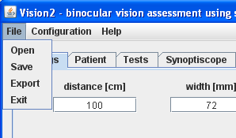

Menu "File"
Picture 1 shows view of "File" menu. It contains following options:
- Open: Allows to open patient data and examination results saved in Vision2 files (default with
vis extension). Function available also after pressing button "Load" on "Patient" tab.
- Save: Allows to save patient data and examination results in Vision2 file (default with
vis extension). Function available also after pressing button "Save" on "Patient" tab.
- Export: Allows to export patient data and examination results to text file (default with
txt extension). Function available also after pressing button "Export" on "Patient" tab.
- Exit: Cause program end. Equals to presing red cross in upper-right corner of window.

Picture 1. Menu "File"